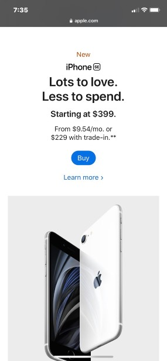

White Space & Clean Design
Apple
Apple.com Apple is one of the biggest companies to exist, from creating phone to wireless earphones. I believe that the white spacing used by apple is very important. It's pops out the text and makes it very easily readable. It also gives the pictures of the technology a nice background contrasting it from the text. Apple is a huge company that has a lot of traffic everyday. The white spacing used on Apples website can be found on any of their pages.
Repetition
Razer
Razer.comRazer is widely know for the high qualtiy gaming merchandise they provide. I felt like that Razer fit the repetition section perfectly. Throughout the main screen when one product is being shown, it turns into a landscape type of advertisment for it. Their color scheme is black with a dark green, this is their main focus with their products but also the with the main colors used in the websites. On each product, there is always a link that will lead to the "add to shopping cart" page where you can customize and choose quantity.
Alignment
Target
Target.comI chose the Target homepage due the alignement of the products. On the main screen as you scroll down the products are shown in the center and as you scroll down it breaks down into 2 products shown side by side and this continues to the end of the webpage. Throughout their whole page, all of the products are shown in a repetition style, when having 1 product it is perfect centered, then with 2 they are placed next to each other, and with 3 products it creates 3 columns.